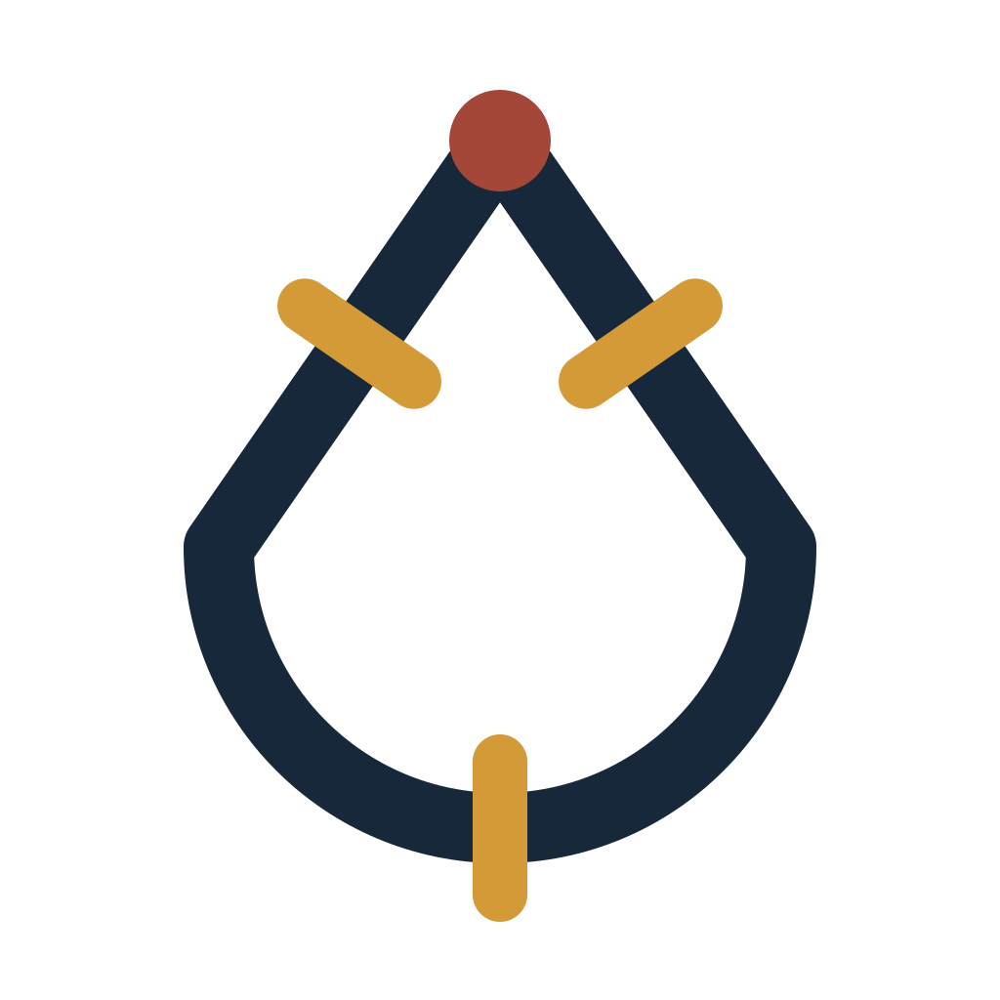
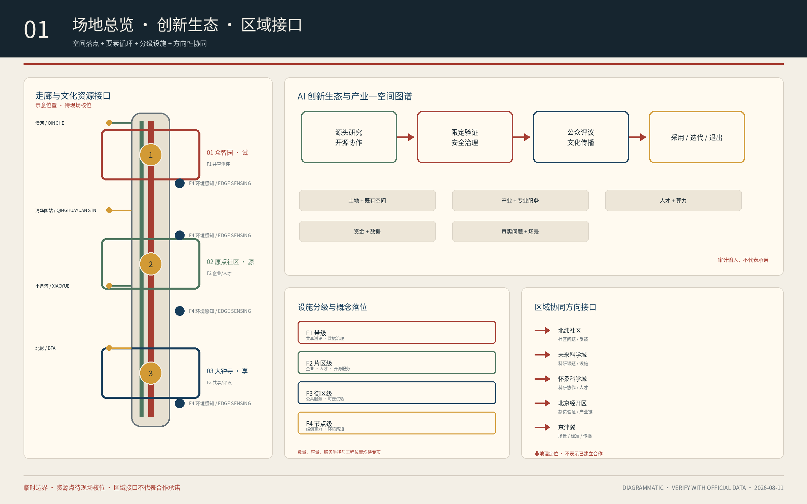
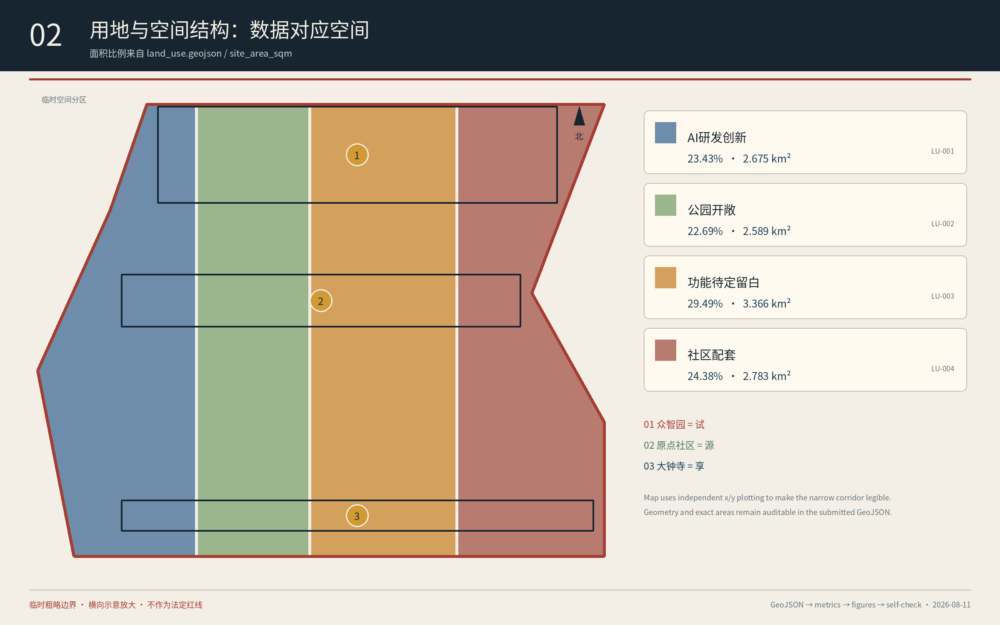
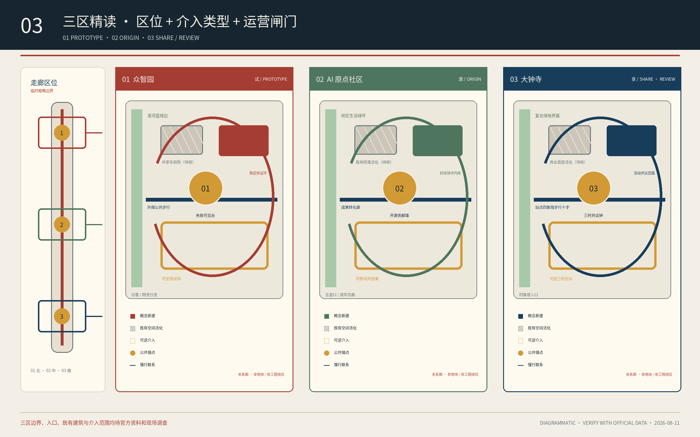
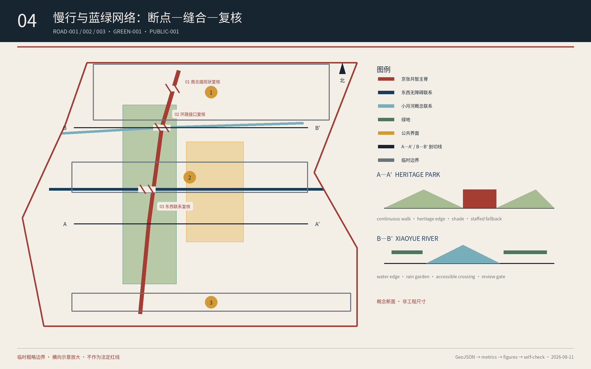
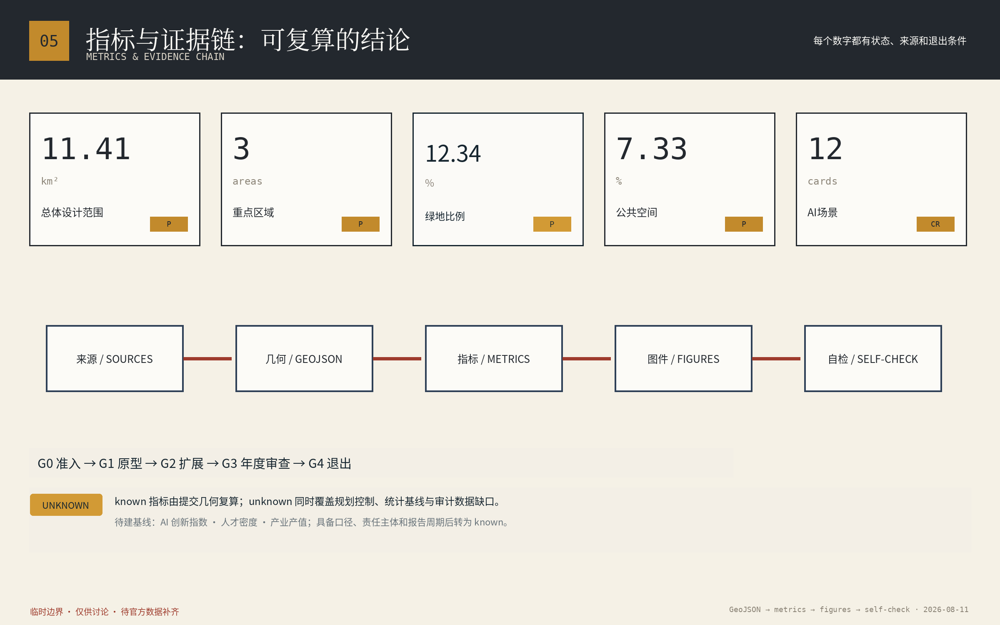

众智园·共试场
约 192.1 ha公告参考约数具身智能、边缘设备、低空巡检与安全治理的限定测试；公开测试时段、急停、保险和退出。

以百年京张为公共骨架，使科研、产业、社区与文化共同定义问题、试验技术、评估结果并分享收益。
本展示显式覆盖：总览地图、三层范围、重点区域、用地分区、交通慢行、蓝绿公共空间、建筑、更新项目、AI 场景、核心指标、任务覆盖、自检状态、来源、假设。最新持久化状态：formal-review-ready · PASS 4/4；唯一保留提示为 provisional geometry。
“钟之时、轨之时、算之时”共同进入公共生活。AI 原点社区负责“源”，众智园负责“试”，大钟寺负责“享”。

经过验证的城市场景是创新生态的基本单位；概念用地用于检验创新、公共空间和生活服务能否共存，不构成法定用地。

三区共用“公共锚点—场景组合—蓝绿慢行—运营闸门”的解剖方法，但承担不同主导角色。

具身智能、边缘设备、低空巡检与安全治理的限定测试；公开测试时段、急停、保险和退出。
高校源头创新、开源协作、成果发布、模型测评和近校人才生活的公共界面。
公共评议、文化展览、国际路演与轨道站点四象限步行联系。
遗址公园和小月河构成蓝绿公共底盘。步行、骑行、遮阴、无障碍和人工服务优先于数字提示。

产业验证是进入真实公共空间的前置门槛；公共服务退出时，非数字入口和人工服务不得同时撤除。
原始音视频不出户，可一键退出，人工回访并行。
端侧路径处理，实体导视和人工服务不撤。
数据归商户并可导出，不得用于竞品监控。
史料可溯源，不做人脸识别，高峰禁飞。
仅环境数据，双传感互校，保留人工巡检。
限速限域、急停、保险、公开时段和随时叫停。
默认桌面仿真；仅在空域、公安/民航、文保与公园管理审批完成后临时隔离试飞，不在遗址公园或水岸常态运行。
合成或脱敏数据，厂商隔离，分级披露。
不留模型权重，到期销毁，允许申诉和复评。
匿名计数，预测失效切换人工疏导。
仅存在感应，传统照明冗余不撤。
公开采纳—拒绝—理由，平台失效回到线下议事。
来源、几何、指标、图件与自检构成一条证据链。known 指标由提交几何复算；unknown 控规指标不渲染伪数字。

下列卡片摘录 G0、G2、G4 三个决策闸门；完整链为 G0 准入 → G1 原型 → G2 扩展 → G3 年度审查 → G4 退出，见图 05。
边界、权限、责任、资金、数据和运维缺一不可。
安全、公共利益、成本和运营证据通过后才扩展。
删除数据、撤销接口、处置资产、迁移用户并归档经验。
`sources.json` 登记官方公告、任务书、临时边界、专业资料与六个官方案例；`assumptions.json` 登记边界、控规、运营与基线缺口。
公告 1.3、1.4、1.5 与 agent.1—agent.6 全部映射到正文、图层、指标、图纸与 HTML。
BLDG-001 仅为概念示范基底，可复算占地；层数、总建筑面积、产权、结构、文保与消防待正式调查。
治理数据、公共锚点、场景开放、蓝绿慢行、社区人才、活动传播均设分期与退出闸门。
Station F、高轮网关、Kendall Square、22@Barcelona、one-north、Smart Kalasatama。
官方边界、道路红线、权属、控规、建筑、市政、文保、交通与运营基线。
确定性、空间、视觉与专业证据检查全部通过；provisional 边界提示持续公开。